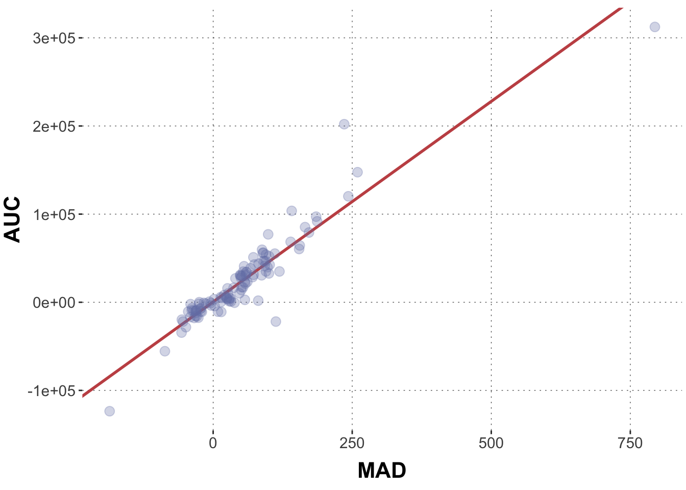
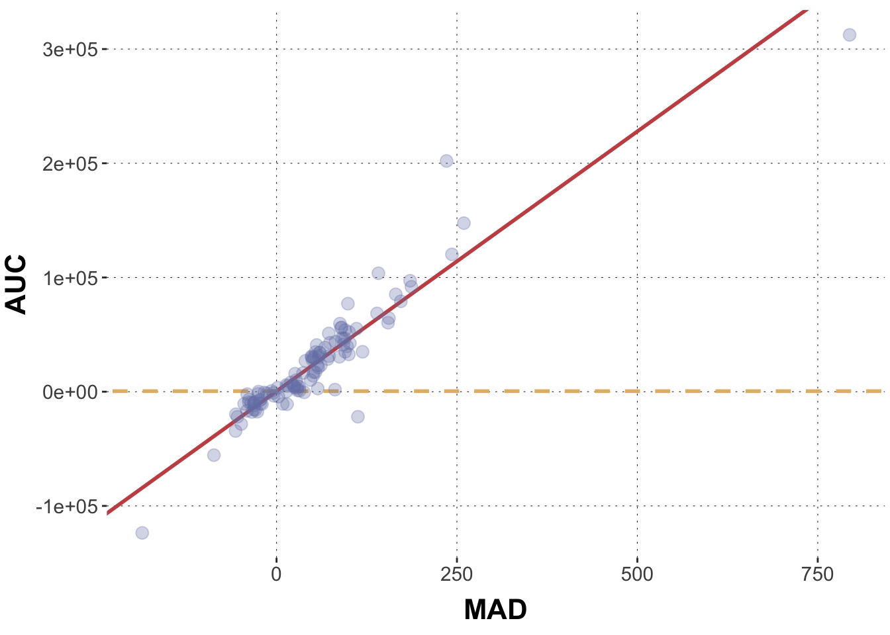
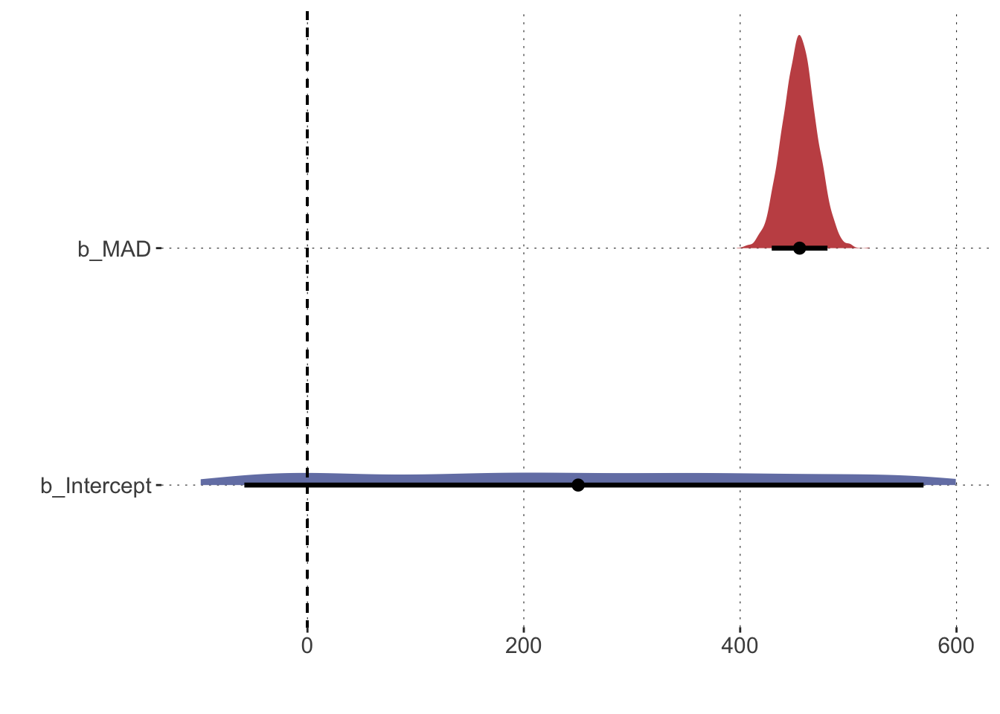
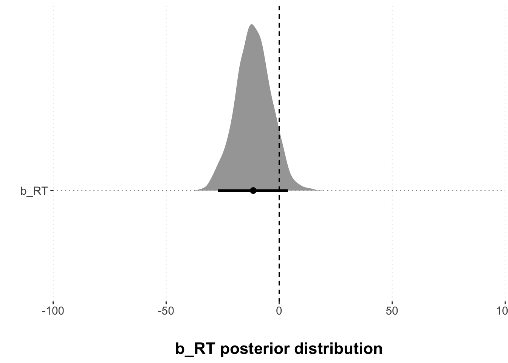

This is a very basic tutorial for running a simple Bayesian regression with brms. You will learn how to specify and run the model, and to extract, plot, and visualize posterior samples.
Preamble
Here is code to load (and if necessary, install) required packages, and to set some global options (for plotting and efficient fitting of Bayesian models).
Toggle code
# install packages from CRAN (unless installed)pckgs_needed <-c("tidyverse","brms","rstan","rstanarm","remotes","tidybayes","bridgesampling","shinystan","mgcv")pckgs_installed <-installed.packages()[,"Package"]pckgs_2_install <- pckgs_needed[!(pckgs_needed %in% pckgs_installed)]if(length(pckgs_2_install)) {install.packages(pckgs_2_install)} # install additional packages from GitHub (unless installed)if (!"aida"%in% pckgs_installed) { remotes::install_github("michael-franke/aida-package")}if (!"faintr"%in% pckgs_installed) { remotes::install_github("michael-franke/faintr")}if (!"cspplot"%in% pckgs_installed) { remotes::install_github("CogSciPrag/cspplot")}# load the required packagesx <-lapply(pckgs_needed, library, character.only =TRUE)library(aida)library(faintr)library(cspplot)# these options help Stan run fasteroptions(mc.cores = parallel::detectCores())# use the CSP-theme for plottingtheme_set(theme_csp())# global color scheme from CSPproject_colors = cspplot::list_colors() |>pull(hex)# names(project_colors) <- cspplot::list_colors() |> pull(name)# setting theme colors globallyscale_colour_discrete <-function(...) {scale_colour_manual(..., values = project_colors)}scale_fill_discrete <-function(...) {scale_fill_manual(..., values = project_colors)}
Simple linear regression
Let’s use the dolphin data set to practice Bayesian linear regression modeling.
Toggle code
dolphin <- aida::data_MT
Let’s start by asking: how is the area-under-the-curve (AUC) related to the maximum absolute deviation (MAD)? We could hypothesize that they are strongly related, right? The more the cursor strives toward the competitor, the larger is the overall area under the curve.
First, we will massage the data a little bit. We only want to look at those rows in which the participant selected the correct response. And instead of looking at all the data, we will only deal with the median values for each participant. In this way, we get a more robust signal (but really we do this here for more practical purposes (faster fitting, less clutter)).
Data wrangling
Toggle code
# aggregatedolphin_agg <- dolphin |>filter(correct ==1) |>group_by(subject_id) |> dplyr::summarize(AUC =median(AUC, na.rm =TRUE),MAD =median(MAD, na.rm =TRUE)) # let's have a lookhead(dolphin_agg)
This graph displays the distribution of AUC and MAD values. We can see that there is a strong relationship between AUC and MAD. And that makes a lot of sense. The more the cursor strives toward the competitor, the larger is the overall area under the curve. Heureka! Our hypothesis is confirmed.
But wait! As Bayesians, we would like to translate the data into an expression of evidence: do the data provide evidence for our research hypotheses? Also, notice that there is some variability. We want precise estimates of potential effects. We also want a measure of how certain we can be about these estimates.
Bayesian linear regression with brms
The brms package allows us to run Bayesian regression models, both simple and rather complex. It uses a sampling method, so its output will be vectors of (correlated) samples from the posterior distribution of the model’s parameters.
So, to quantify evidence and uncertainty with posterior samples, let’s run a simple linear regression model using brms. We use the R’s standard notation at first (though brms extends this syntax substantially for more complex models) to specify a formula in which AUC is predicted by MAD.
AUC ~ MAD
When you run this code, the brms package generates Stan code and runs the Stan program in the background. Stan code is executed in C++, and the model will be ‘compiled’ (you get information about this in the console output). You we will want to learn later what this compilation does (spoiler: it computes gradients for all stochastic nodes in the model). The only thing that is relevant for you at the moment is this: This compilation can take quite a while (especially for complex models) before anything happens.
Toggle code
# specify the model model1 =brm(# model formula AUC ~ MAD, # datadata = dolphin_agg )
Toggle code
summary(model1)
Family: gaussian
Links: mu = identity; sigma = identity
Formula: AUC ~ MAD
Data: dolphin_agg (Number of observations: 108)
Draws: 4 chains, each with iter = 2000; warmup = 1000; thin = 1;
total post-warmup draws = 4000
Population-Level Effects:
Estimate Est.Error l-95% CI u-95% CI Rhat Bulk_ESS Tail_ESS
Intercept 475.20 1817.35 -3071.30 4034.48 1.00 4365 2708
MAD 454.90 15.78 423.89 485.88 1.00 4004 2821
Family Specific Parameters:
Estimate Est.Error l-95% CI u-95% CI Rhat Bulk_ESS Tail_ESS
sigma 17170.94 1190.49 15013.49 19821.21 1.00 3910 2616
Draws were sampled using sampling(NUTS). For each parameter, Bulk_ESS
and Tail_ESS are effective sample size measures, and Rhat is the potential
scale reduction factor on split chains (at convergence, Rhat = 1).
The output of such a model looks very familiar if you have worked with lm() before. We want to look at what is here called “Population-Level Effects”, which is a small table in this case. The first column contains the names of our coefficients; the Estimate column gives us the posterior mean of these coefficients; the Est.Error give us the standard error; the l-95%and u-95% give us the lower and upper limit of the 95% Credible Interval (henceforth CrI). The column Rhat (R^) which is a diagnostic of chain convergence and should not diverge much from 1 (rule of thumb: should by <1.1). Again, more about that later. The Bulk_ESS and Tail_ESS columns give us numbers of “useful” samples. This number should be sufficiently high. If its not, brms will give you a convenient warning (more about that later, so don’t worry for now). If that happens, you need to increase the chains and / or the number of iterations in order to increase the overall number of samples (again, don’t worry for now).
If we need the main summary output in a tidy tibble format, we can use this function from the tidybayes package:
The model output suggests that the posterior mean of the Intercept is around 500. The coefficient for MAD is estimated to be about 450.
To see how good a fit this is, we should manually draw this line into the graph from above.
Toggle code
# extract model parameters:model_intercept <-summary(model1)$fixed[1,1]model_slope <-summary(model1)$fixed[2,1]# plotggplot(data = dolphin_agg, aes(x = MAD, y = AUC)) +geom_abline(intercept = model_intercept, slope = model_slope, color = project_colors[2], size =1) +geom_point(size =3, alpha =0.3, color = project_colors[1])

Looking at the graph, it does make sense, right? The red line seems to capture the main trend pretty well.
Now is there a relationship between AUC and MAD? What would it mean if there was no relationship between these two measures? Well no relationship would mean a slope of 0. How would that look like?
Toggle code
ggplot(data = dolphin_agg, aes(x = MAD, y = AUC)) +geom_abline(intercept = model_intercept, slope = model_slope, color = project_colors[2], size =1) +geom_abline(intercept = model_intercept, slope =0, color = project_colors[3], size =1, lty ="dashed") +geom_point(size =3, alpha =0.3, color = project_colors[1])

These lines look quite different indeed. But Bayesian data analysis does not give us only one single line. It gives us infinitely many lines, weighted by plausibility. Let’s explore this universe of weighted predictions.
Extracting posterior distributions and plotting them
We can interpret and visualize our coefficients immediately. We can create a data frame with all posterior samples for each parameter and plot those distributions for all coefficients. Let’s first see what coefficients there are with the get_variables() function from the tidybayes package.
Everything that is preceded by a b_ is a population level coefficients, i.e. our predictors. Now let’s wrangle this data frame to get what we need. You don’t have to entirely understand the following code, but make sure you understand it well enough to recycle it later on.
Now that we know how to extract posterior samples, let’s actually take a bunch of these samples and plot them as lines into our scatter plot from above. In this code chunk we generate a subsample of 100 parameter pairs. (There are methods to directly sample from the posterior values of the linear predictor, which is what you want to use for complex models, but here we go full hands-on.)
Given our model, assumptions and data, these are 100 plausible regression lines. As you can see they are very similar.
Using this pipeline we can also calculate the mean of the posteriors and any kind of Credible Interval (CrI). We first extract the posterior and bring them into a tidy form. Let’s only look at the coefficient for MAD here.
Toggle code
posteriors3 <- model1 |># use the gather_draws() function for "long data" tidybayes::gather_draws(b_MAD) |># change names of columnsrename(parameter = .variable,posterior = .value) |># select only those columns that are relevantselect(parameter, posterior)head(posteriors3)
Now we use this newly created data frame to plot the posterior distributions of all population-level coefficients. Again, we use our new best friend, the tidybayes package which offers some sweet extensions to ggplot’s geom_ family of functions. We also add a reference point to compare the posteriors against. A common and reasonable reference point is 0. Remember a slope coefficient of zero would correspond to a flat regression line.
Toggle code
# plot the regression coefficientsposteriors1 |>pivot_longer(cols =everything(), names_to ="parameter", values_to ="posterior") |>ggplot(aes(x = posterior, y = parameter, fill = parameter)) +# plot density w/ 90% credible interval tidybayes::stat_halfeye(.width =0.9) +# add axes titlesxlab("") +ylab("") +# adjust the x-axis scale_x_continuous(limits =c(-100,600)) +# add line for the value zerogeom_segment(x =0, xend =0, y =Inf, yend =-Inf,lty ="dashed") +theme(legend.position="none")

Toggle code
posteriors3_agg[1,2]
# A tibble: 1 × 1
`90lowerCrI`
<dbl>
1 425.
Here you see density plots for our critical coefficients of the model. We care mostly about the slope coefficient (b_MAD) (the posterior of which is shown in red). Values between about 425.1 and about 486.68 are plausible (at the 90% level) and they are indicated by the thick black line in the density plot for this coefficient. The mean of the distribution is indicated by the thick black dot.
That’s helpful because we can relate this distribution to relevant values, for example the value 0 (dashed line). If you look at the coefficient, you can see that the posterior distribution does not include the value zero or any small-ish “Region of Practical Equivalence” around it. In fact, the posterior is really far away from zero. Thus, if we believe in the data and the model, we can be very certain that this coefficient is not zero. In other words, we would be very certain that there is a positive relationship between AUC and MAD (and in turn that ‘no relationship’ is not a very plausible scenario).
The brms package allows us to quickly evaluate how many posterior samples fall into a certain value range. Just for fun, let’s calculate the amount of posterior samples that are larger than 450. The following code chunk does this for us:
Toggle code
hypothesis(model1, 'MAD > 450')
Hypothesis Tests for class b:
Hypothesis Estimate Est.Error CI.Lower CI.Upper Evid.Ratio Post.Prob
1 (MAD)-(450) > 0 4.9 15.78 -20.81 30.74 1.71 0.63
Star
1
---
'CI': 90%-CI for one-sided and 95%-CI for two-sided hypotheses.
'*': For one-sided hypotheses, the posterior probability exceeds 95%;
for two-sided hypotheses, the value tested against lies outside the 95%-CI.
Posterior probabilities of point hypotheses assume equal prior probabilities.
The results tell us that more than 60% of all posterior samples are larger than 450. It also tells us the evidence ratio (more on this later), which is the odds of the hypothesis in question (here ’MAD > 450).
Exercises
Exercise 1
Massage the data and create a new dataset that contains only correct responses and only the mean values of the RT and the AUC measurement for each participant (subject_id). Print out the head of the dataset.
Solution
Toggle code
# aggregatedolphin_agg <- dolphin |>filter(correct ==1) |>group_by(subject_id) |> dplyr::summarize(AUC =mean(AUC, na.rm =TRUE),RT =mean(RT, na.rm =TRUE))# let's have a lookhead(dolphin_agg)
We saw previously that the area-under-the-curve (AUC) is likely related to the maximum absolute deviation (MAD). But what about reaction times (RTs)? Isn’t it plausible that RTs are also related to AUC? The further I curve away from the target with the cursor, the longer it takes me to arrive at the target, right?
Exercise 2
Plot the relationship between RT and AUC in a scatter plot. Run a linear regression using brms. AUC is the dependent variable (i.e. the measure) and RT is the independent variables (i.e. the predictor). The formula writes: AUC ~ RT
# specify the model model1 <-brm(# model formula AUC ~ RT, # datadata = dolphin_agg )summary(model1)
Exercise 3
Look at the model output from the previous exercise. Think of it in terms of a line in the scatter plot. Where does the regression line cross the y-axis, what is the slope of the line? Draw a scatter plot of AUC against RT and add the predicted values as a line.
That doesn’t really look like a tight linear relationship, right? If there is any relationship, AUC values become lower with longer reaction times (the line has a negative slope).
So, create a new data frame which contains the extracted posteriors for b_RT from the model output (use the spread_draws() function). Print out the head of the new data set.
Solution
Toggle code
# get posteriors for the relevant coefficientsposteriors1 <- model1 |># use the spread_draws() function of tidybayes for all relevant parametersspread_draws(b_RT) |># select only those columns that are relevantselect(b_RT) |># bring into long formatgather(key ="parameter", value ="posterior")head(posteriors1)
Plot the results with the tidybayes::stat_halfeye() function. Use a 95% credible interval for that. Add a vertical line at zero.
Solution
Toggle code
# plot the regression coefficientsggplot(posteriors1, aes(x = posterior, y = parameter)) +# plot density tidybayes::stat_halfeye(.width =0.95) +# add axes titlesxlab("\nb_RT posterior distribution") +ylab("") +# adjust the x-axis scale_x_continuous(expand =c(0, 0), limits =c(-100,100)) +# add line for the value zerogeom_segment(x =0, xend =0, y =Inf, yend =-Inf,lty ="dashed")

Exercise 6
Now: What is the picture telling us? Is there reason to believe in a relationship between AUC and RT? Think about it!
Solution
There is no compelling support for a belief in a relationship between AUC and RT. The value zero (no relationship) is contained in the 95% CrI and a non-trivial amount of posterior samples is larger than 0.